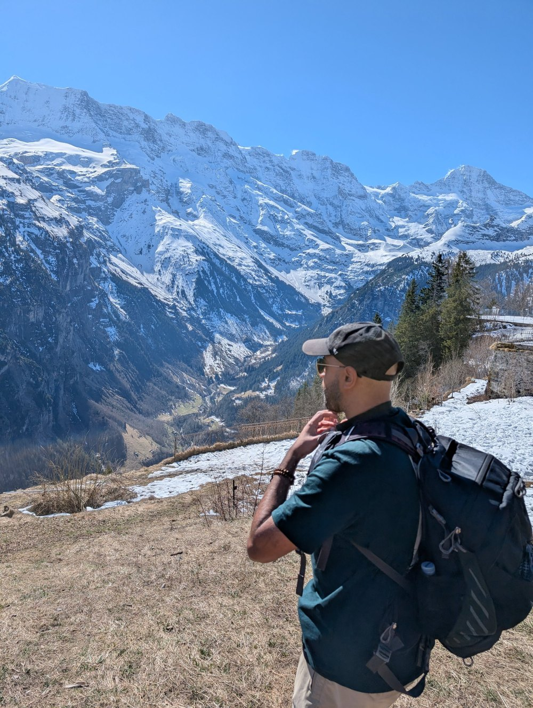
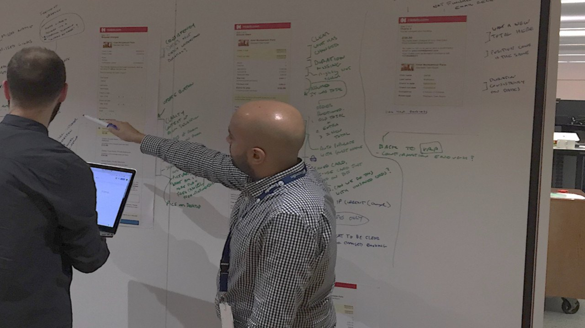

About
I'm a product design lead in London with a degree grounded in human-computer interaction. I've designed digital products for over 20 years, the last ten on checkout, credit cards and loyalty, and I stay hands-on.
I'm a product design lead in London with a degree grounded in human-computer interaction. I've designed digital products for over 20 years, the last ten leading design on checkout, credit cards and loyalty, and I stay close to the work.

How I work
I start from evidence. That means research on the way in and a test on the way out, and I take the results as they come. Some of the most useful tests I have designed were the ones that lost.
I spent several years in test readouts at Hotels.com, deciding what the design did next. Our analysts ran the numbers and the design calls were mine. Booking form tests could have over a million purchasers in them, so I looked at the segments and the guardrails before I trusted the headline lift. The credit card tests ran on far less traffic, and one of them finished without reaching its stopping rules. I had to be comfortable saying we didn't know yet, and plan the next test from there.
I like to build things to find out whether an idea works. I use AI and code to get a concept running, then I show people the working version and see what they make of it. This year that has meant the Lab projects and the work on Building with AI.
I lead by setting a clear standard and then giving people room. I would sooner hand someone a real piece of work to own than a development plan.

Where I have worked
2026 to now
VIXU Design
Founder and Principal Designer
My own practice. Product and experience design, usability audits and user research. I use AI and agentic coding tools to take concepts to working products. Building with AI shows this year's work.
2022 to 2026
Expedia Group
Lead Experience Designer
Design lead for the One Key co-brand credit card and loyalty programmes across Expedia, Hotels.com and Vrbo. I managed three product designers and set direction for around fifteen people across four workstreams. See Save Your Way, the One Key card application and Leading a design team.
2018 to 2022
Expedia Group
Senior Product Designer
Sole designer on the Hotels.com Rewards Visa, issued by Wells Fargo. See A credit card offer inside checkout.
2016 to 2018
Expedia Group
Product Designer
Hotels.com checkout. I wrote the booking form vision and designed the test programme. See Checkout North Star.
2015 to 2016
Lloyds Banking Group
User Experience Designer
The first in-house UX designer in commercial banking's transformation team. See Business loans and a mortgage tool.
2013 to 2015
Trainline
User Experience Designer
The first in-house UX designer. See Trainline apps and mobile ticketing.
Earlier
College of Policing
Developer, Instructional Designer, then Producer
I started in code and moved into design and production. See London 2012 training.
Education and recognition
BSc (Hons) Multimedia Computing, 2:1, University of Westminster. My thesis was on human-computer interaction for travel. I observed and interviewed travellers at Heathrow and designed a touch interface to help them plan onward journeys in several languages.
Expedia Group Team of the Year. Trainline Team of the Year. E-learning Age Awards, Gold. Chief Constable's Commendation. London Olympic Games Medallion.